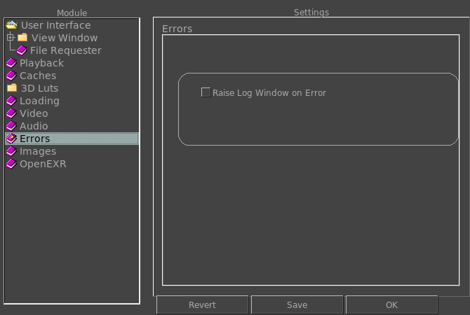

The Errors Preferences tab allows you to configure how the errors are reported.

Raise Log Window on Error
Toggling this option on will raise the log window whenever the first error is detected and reported. Note that closing the log window will not have it be raised again on a second error.